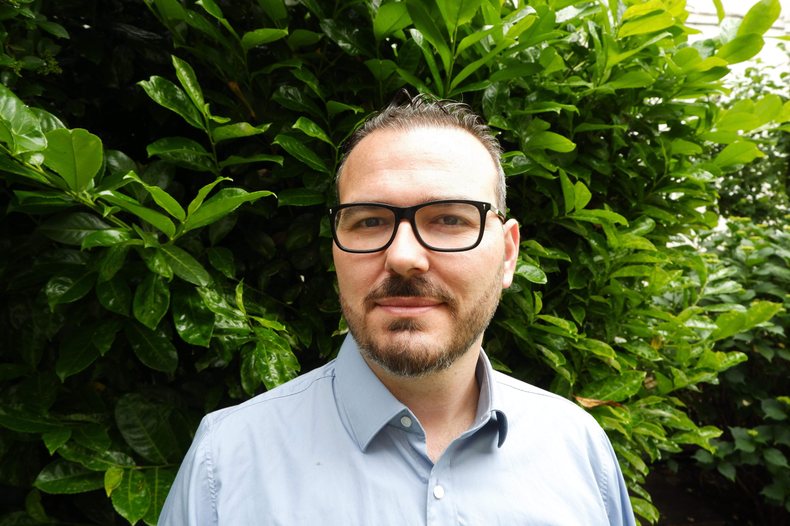

DANFront Projesi Ekibi Üyeleri

Proje Lideri
University of Vienna, Yakın Doğu Çalışmaları Bölümü'nde kıdemli doktora sonrası araştırmacıdır. 2015 yılında Arizona Üniversitesi'nden Osmanlı İzmir'inin kentsel ve çevre tarihi üzerine doktora derecesini almıştır. Avrupa Çevre Tarihi Derneği'nin (ESEH) yönetim kurulu üyesi ve genel sekreteridir. 2017-2025 yılları arasında Türkiye bölge temsilciliği yapmıştır.
Araştırması geç Osmanlı İmparatorluğu ve erken cumhuriyet dönemi Türkiye'sinin kentsel ve çevre tarihlerine odaklanmaktadır. "Gateway to the Mediterranean: An Environmental History of the Late Ottoman Izmir" adlı monografisi 2025 yılında Cambridge University Press tarafından yayınlanmıştır.
Araştırmacı
Bilkent Üniversitesi Tarih Bölümü'nde doktora adayıdır. Orta Doğu Teknik Üniversitesi'nden "Ottoman Fortresses and Garrisons in the Hungarian and the Eastern Frontiers (1578-1664)" başlıklı tezi ile yüksek lisans derecesini almıştır.
Araştırması erken modern Osmanlı İmparatorluğu'nun askeri ve sosyo-ekonomik tarihine odaklanmaktadır. Erken Modern Osmanlı Çalışmaları (EMOS) grubunun üyesidir.
Ph.D. Adayı, Bilkent Üniversitesi
Bilkent Üniversitesi, Tarih Bölümü
CBS Uzmanı
Budapeşte'deki Eötvös Loránd Üniversitesi'nden Arkeoloji bölümünden mezun olmuştur. Hem lisans hem de yüksek lisans tezleri Buda'nın Su Şehri'ndeki bir kazıdan çıkan Osmanlı ve Erken Modern Dönem seramiklerinin analizine odaklanmıştır.
Birkaç yıl arkeolog olarak çalıştıktan sonra, Orta Avrupa Üniversitesi'nde ikinci bir yüksek lisans derecesi almış ve Kisvárda Kalesi'nin tarihi ve arkeolojik kayıtlarını incelemiştir. Şu anda CEU'da doktora adayıdır ve Macaristan'daki Yukarı-Tisza bölgesinin çevre tarihini çalışmaktadır.
Ph.D. Adayı, Central European University
Eötvös Loránd Üniversitesi, Arkeoloji
University of Vienna
Department of Near Eastern Studies
Spitalgasse 2, Hof 4 (Campus)
A-1090 Vienna, Austria